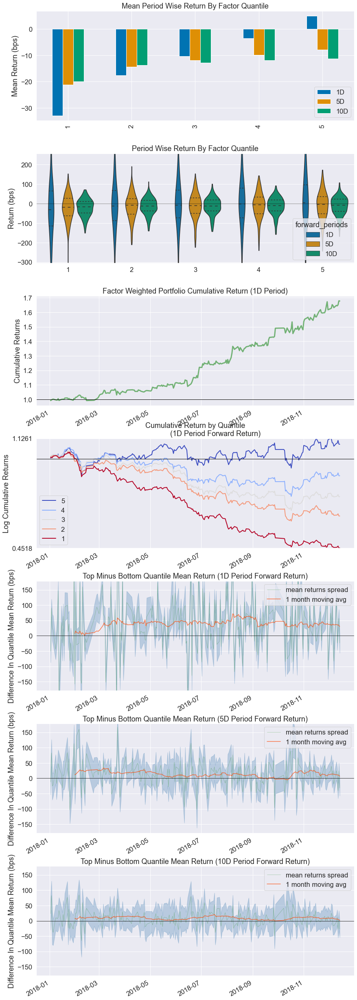
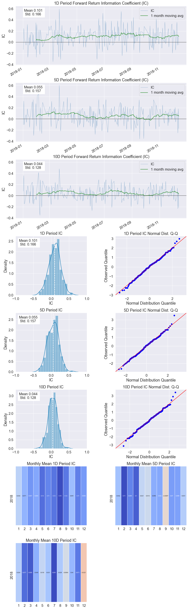
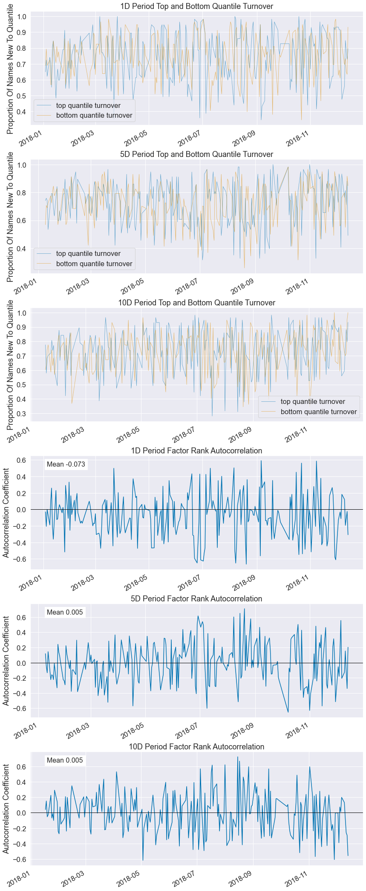

import pandas as pd
from datas import *
year = 2018
list_assets, df_assets = get_hs300_stocks(f'{year}-01-01')
dfs= get_all_date_data(f'{year}-01-01', f'{year+1}-01-01', list_assets)
df_all = dfs[['date', 'asset', "close"]]
df_all['date'] = pd.to_datetime(df_all['date'])
# print(df_all)
close = df_all.pivot(index='date', columns='asset', values='close')
# close.index = pd.to_datetime(close.index)
print(close)
login success!
login respond error_code:0
login respond error_msg:success
query_hs300 error_code:0
query_hs300 error_msg:success
logout success!
300
asset 000001 000002 000008 000060 000063 000069 000100 000157 \
date
2018-01-02 13.70 32.56 8.77 11.28 35.73 8.90 3.91 4.55
2018-01-03 13.33 32.33 8.75 11.21 36.69 8.95 3.99 4.53
2018-01-04 13.25 33.12 8.68 11.35 36.90 9.04 3.96 4.51
2018-01-05 13.30 34.76 8.55 11.31 36.04 9.52 3.92 4.57
2018-01-08 12.96 35.99 8.47 11.55 35.57 9.49 3.88 4.66
... ... ... ... ... ... ... ... ...
2018-12-24 9.42 23.88 3.96 4.04 20.26 5.94 2.40 3.67
2018-12-25 9.34 23.97 3.97 3.97 20.36 5.89 2.41 3.61
2018-12-26 9.30 23.80 3.98 3.94 19.86 6.09 2.40 3.58
2018-12-27 9.28 23.44 3.89 3.94 19.90 6.16 2.42 3.58
2018-12-28 9.38 23.82 3.89 3.96 19.59 6.35 2.45 3.56
asset 000166 000333 ... 601989 601991 601992 601997 601998 \
date ...
2018-01-02 5.38 56.38 ... 6.04 4.19 5.59 13.64 6.32
2018-01-03 5.37 55.80 ... 6.13 4.26 6.15 13.71 6.37
2018-01-04 5.33 57.29 ... 6.09 4.24 6.14 13.95 6.39
2018-01-05 5.35 57.96 ... 6.10 4.24 6.18 13.94 6.44
2018-01-08 5.40 57.66 ... 6.08 4.29 6.20 14.05 6.54
... ... ... ... ... ... ... ... ...
2018-12-24 4.15 37.74 ... 4.22 3.10 3.59 10.73 5.48
2018-12-25 4.07 37.38 ... 4.20 3.08 3.52 10.69 5.39
2018-12-26 4.01 37.13 ... 4.18 3.05 3.58 10.66 5.39
2018-12-27 3.99 36.80 ... 4.26 3.09 3.53 10.58 5.37
2018-12-28 4.07 36.86 ... 4.25 3.15 3.50 10.68 5.45
asset 603160 603799 603833 603858 603993
date
2018-01-02 98.11 80.97 121.50 51.27 6.94
2018-01-03 99.87 87.17 121.53 52.35 7.05
2018-01-04 100.03 89.79 124.40 52.03 7.23
2018-01-05 97.03 90.95 124.51 52.10 7.16
2018-01-08 99.27 94.18 127.03 52.13 7.30
... ... ... ... ... ...
2018-12-24 80.16 32.34 84.00 25.46 3.95
2018-12-25 77.62 31.02 82.78 25.42 3.89
2018-12-26 77.61 30.37 81.52 25.50 3.84
2018-12-27 79.50 29.77 80.80 25.26 3.76
2018-12-28 78.70 30.11 79.72 25.28 3.76
[243 rows x 298 columns]
<ipython-input-17-ac9f773820f6>:10: SettingWithCopyWarning:
A value is trying to be set on a copy of a slice from a DataFrame.
Try using .loc[row_indexer,col_indexer] = value instead
See the caveats in the documentation: https://pandas.pydata.org/pandas-docs/stable/user_guide/indexing.html#returning-a-view-versus-a-copy
df_all['date'] = pd.to_datetime(df_all['date'])
###########################简单现计算的因子#######################################
# alpha = dfs[['date', 'asset', "pctChg"]]
# alpha = alpha.rename(columns={
# "pctChg": "factor"})
# alpha['date'] = pd.to_datetime(alpha['date'])
# alpha = alpha.set_index(['date', 'asset'], drop=True)
# alpha.sort_index(inplace=True)
# print(alpha)
############################已计算好存在文件中的因子######################################
alpha_num = 83
alpha_name = 'Alphas101'
# 读取已经计算好的因子
alpha = pd.read_csv('alphas/{}/{}/alpha{:03d}.csv'.format(alpha_name, year, alpha_num))
# 筛选出今年的数据，需与股票收盘日期区间一致
alpha = alpha[(alpha['date'] >= f'{year}-01-01') & (alpha['date'] <= f'{year+1}-01-01')]
# 因子矩阵转换为一维数据(alphalens需要的格式)
alpha = alpha.melt(id_vars=['date'], var_name='asset', value_name='factor' )
# date列转为日期格式
alpha['date'] = pd.to_datetime(alpha['date'])
alpha = alpha[['date', 'asset', 'factor']]
# 设置二级索引
alpha = alpha.set_index(['date', 'asset'], drop=True)
alpha.sort_index(inplace=True)
print(alpha)
#############################因子分析#######################################
from alphalens.utils import get_clean_factor_and_forward_returns
from alphalens.tears import create_full_tear_sheet
ret = get_clean_factor_and_forward_returns(alpha, close,quantiles=5)
create_full_tear_sheet(ret, long_short=False)
factor
date asset
2018-01-02 000001 0.348996
000002 -1.138443
000008 -0.207436
000060 -2.402391
000063 -2.683300
... ...
2018-12-28 603160 -1.934436
603799 -0.599580
603833 0.064911
603858 0.016927
603993 0.145945
[72657 rows x 1 columns]
Dropped 8.3% entries from factor data: 8.3% in forward returns computation and 0.0% in binning phase (set max_loss=0 to see potentially suppressed Exceptions).
max_loss is 35.0%, not exceeded: OK!
Quantiles Statistics
| min | max | mean | std | count | count % | |
|---|---|---|---|---|---|---|
| factor_quantile | ||||||
| 1 | -37.614211 | 0.167625 | -1.841546 | 2.565128 | 13441 | 20.163819 |
| 2 | -2.473767 | 0.450622 | -0.257523 | 0.403960 | 13282 | 19.925291 |
| 3 | -0.861699 | 1.048236 | 0.030461 | 0.273676 | 13293 | 19.941793 |
| 4 | -0.356785 | 2.626910 | 0.339276 | 0.466419 | 13282 | 19.925291 |
| 5 | -0.114147 | 54.135463 | 1.881461 | 2.531564 | 13361 | 20.043805 |
Returns Analysis
| 1D | 5D | 10D | |
|---|---|---|---|
| Ann. alpha | 0.809 | 0.268 | 0.142 |
| beta | 0.048 | 0.067 | -0.022 |
| Mean Period Wise Return Top Quantile (bps) | 5.046 | -7.895 | -11.231 |
| Mean Period Wise Return Bottom Quantile (bps) | -32.867 | -21.182 | -19.914 |
| Mean Period Wise Spread (bps) | 37.913 | 13.183 | 8.626 |
<Figure size 432x288 with 0 Axes>

Information Analysis
| 1D | 5D | 10D | |
|---|---|---|---|
| IC Mean | 0.101 | 0.055 | 0.044 |
| IC Std. | 0.166 | 0.157 | 0.128 |
| Risk-Adjusted IC | 0.605 | 0.347 | 0.343 |
| t-stat(IC) | 9.231 | 5.304 | 5.233 |
| p-value(IC) | 0.000 | 0.000 | 0.000 |
| IC Skew | -0.055 | 0.049 | 0.018 |
| IC Kurtosis | 0.088 | 0.063 | 0.397 |
d:\ProgramData\Anaconda3\lib\site-packages\seaborn\distributions.py:2557: FutureWarning: `distplot` is a deprecated function and will be removed in a future version. Please adapt your code to use either `displot` (a figure-level function with similar flexibility) or `histplot` (an axes-level function for histograms).
warnings.warn(msg, FutureWarning)
d:\ProgramData\Anaconda3\lib\site-packages\seaborn\distributions.py:2557: FutureWarning: `distplot` is a deprecated function and will be removed in a future version. Please adapt your code to use either `displot` (a figure-level function with similar flexibility) or `histplot` (an axes-level function for histograms).
warnings.warn(msg, FutureWarning)
d:\ProgramData\Anaconda3\lib\site-packages\seaborn\distributions.py:2557: FutureWarning: `distplot` is a deprecated function and will be removed in a future version. Please adapt your code to use either `displot` (a figure-level function with similar flexibility) or `histplot` (an axes-level function for histograms).
warnings.warn(msg, FutureWarning)

d:\code\StockProject\alphas\alphas\alphalens\utils.py:910: UserWarning: Skipping return periods that aren't exact multiples of days.
warnings.warn(
Turnover Analysis
| 1D | 5D | 10D | |
|---|---|---|---|
| Quantile 1 Mean Turnover | 0.753 | 0.721 | 0.732 |
| Quantile 2 Mean Turnover | 0.787 | 0.779 | 0.771 |
| Quantile 3 Mean Turnover | 0.735 | 0.736 | 0.735 |
| Quantile 4 Mean Turnover | 0.788 | 0.771 | 0.769 |
| Quantile 5 Mean Turnover | 0.748 | 0.726 | 0.732 |
| 1D | 5D | 10D | |
|---|---|---|---|
| Mean Factor Rank Autocorrelation | -0.073 | 0.005 | 0.005 |
